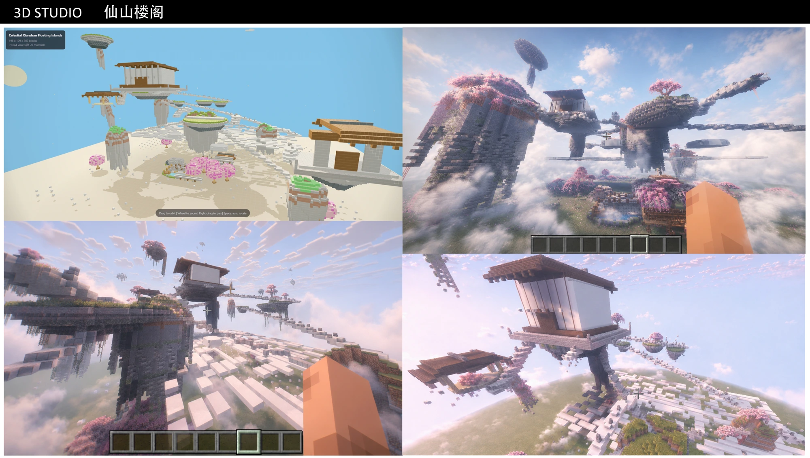
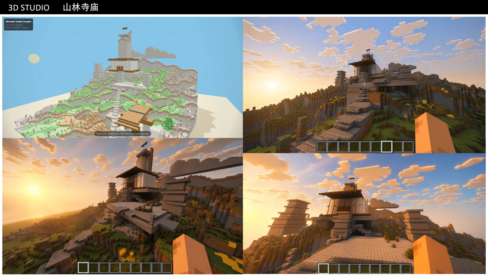
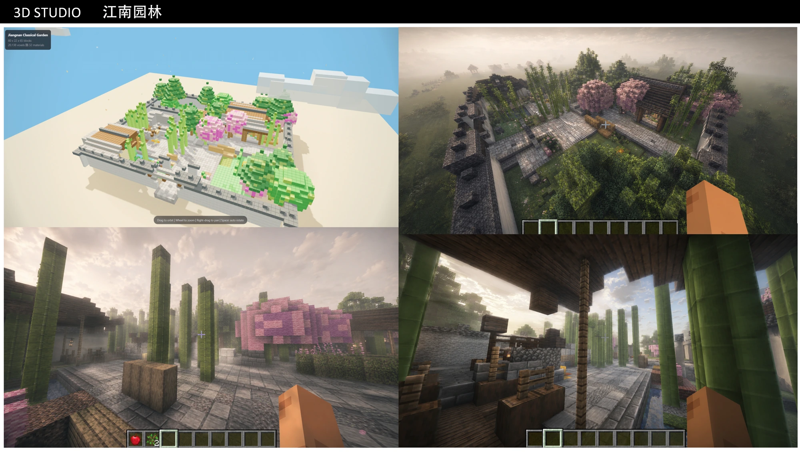
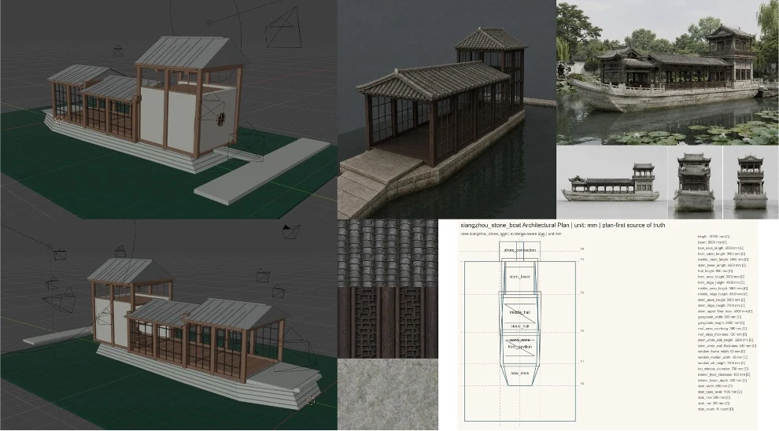
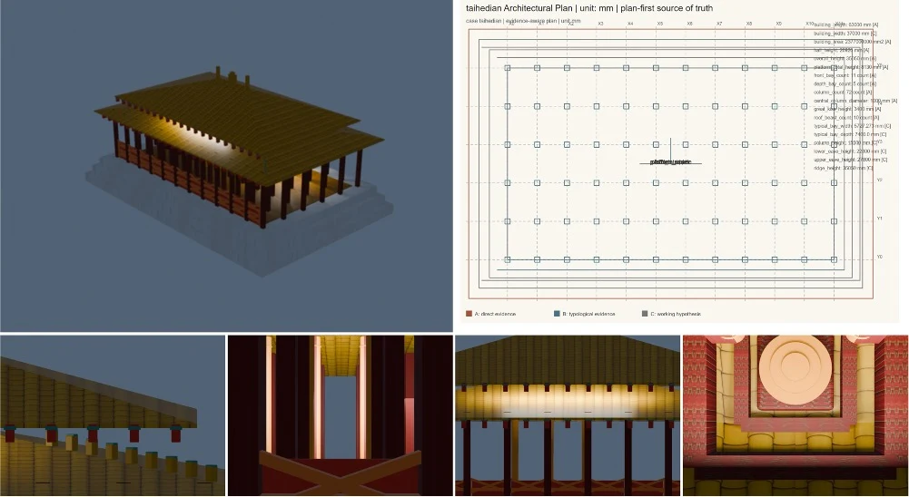
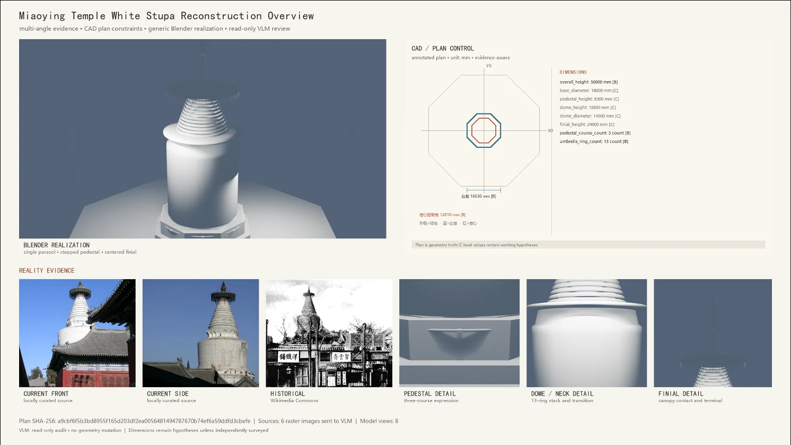

Design knowledge & human–AI creation · 2026
Design Skills for Chinese Gardens
Making spatial design knowledge inspectable and executable.
Research question
How can a designer’s knowledge of movement, viewing and spatial sequence become usable by a generation agent while remaining open to human judgment?
Approach
Spatial design rules are expressed in language and organized into reusable Design Skills. A lightweight LLM uses these skills to build the scenes and models shown here. WorldSpec represents objects and spatial relationships independently of the rendering backend; navigation and visibility checks support local repair. Users can edit parameters, lock regions and inspect the design rationale.
Current work
An implemented creation–inspection–repair workflow with Three.js and Minecraft outputs, including accept/reject and undo/redo operations. Current scenes provide a testbed for spatial relationships and interaction.
Research prototype. Cultural design claims require domain validation; the system does not treat aesthetics as a universal numerical score.











